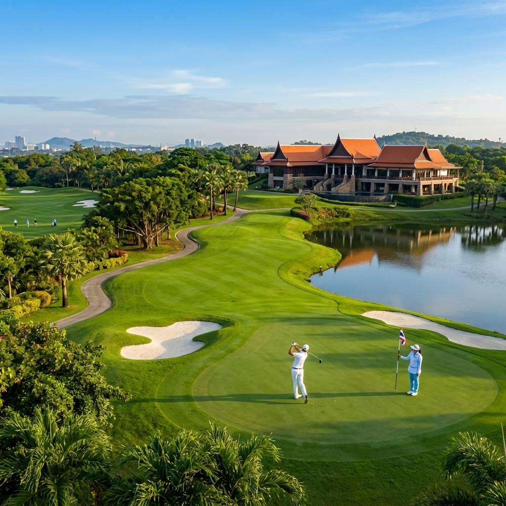
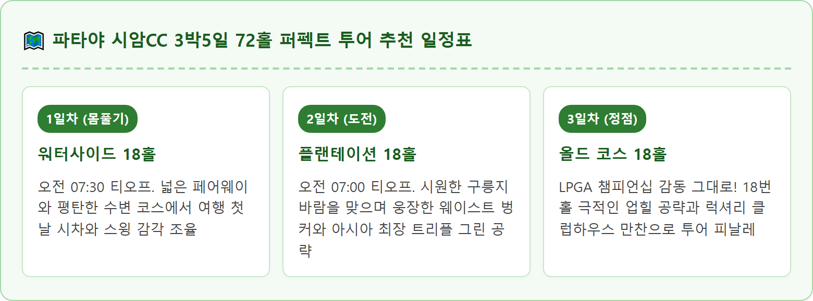
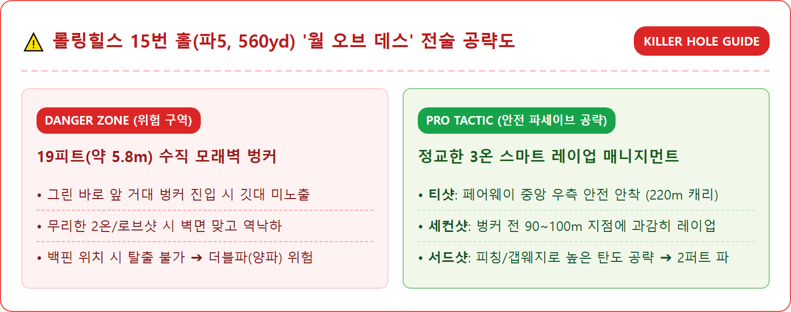
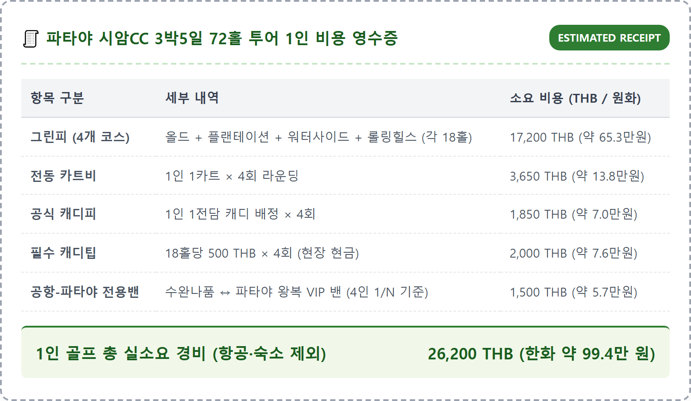
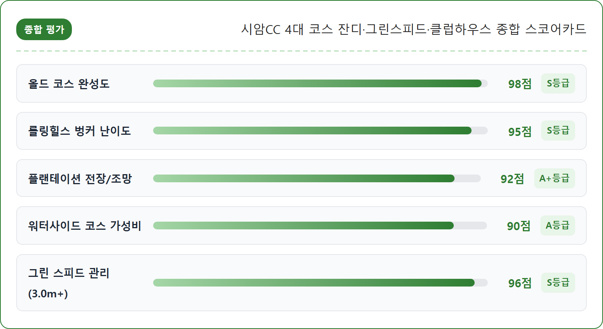
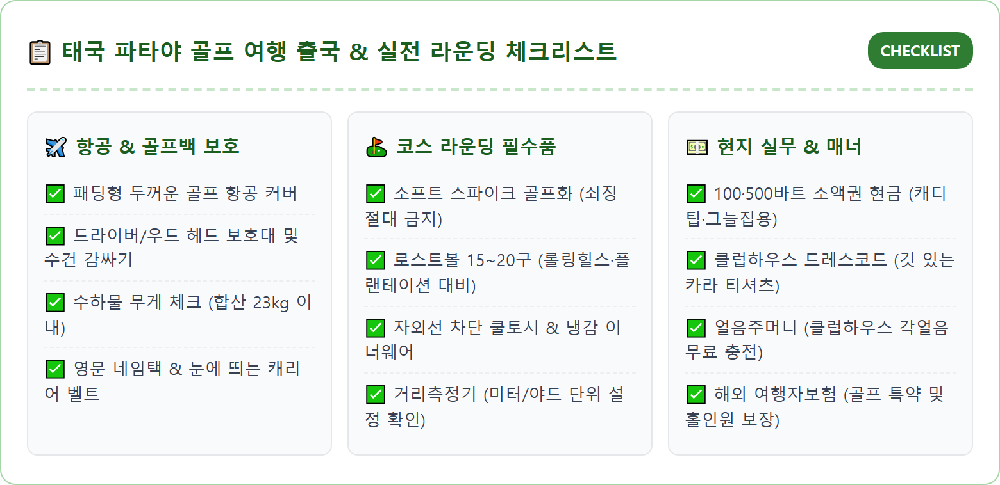
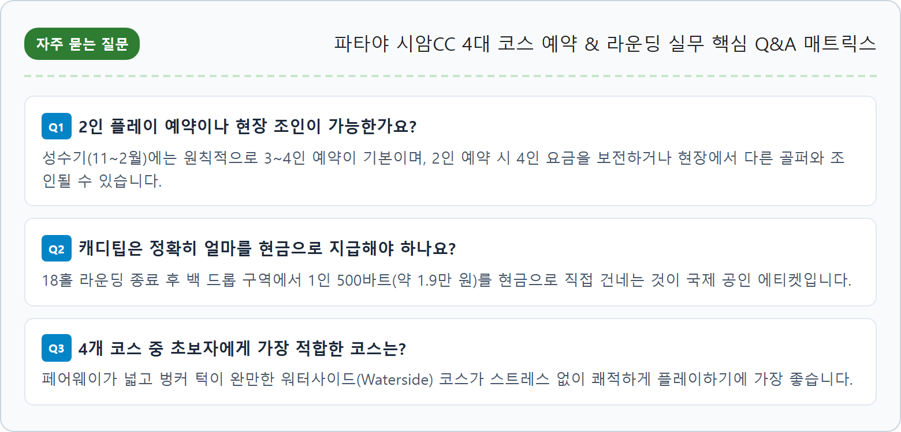

태국 파타야는 일 년 내내 온화한 기후와 뛰어난 가성비, 그리고 세계적 수준의 리조트 인프라를 갖추어 한국 골퍼들이 가장 사랑하는 해외 골프 여행지 1위로 꼽힙니다.
그 수많은 골프장 중에서도 시암 컨트리클럽(Siam Country Club)은 태국을 넘어 아시아 전체를 대표하는 독보적인 황제 골프장입니다. 1971년 일본의 유명 설계가 I. 이즈미의 디자인으로 개장한 올드 코스를 시작으로, 2008년 플랜테이션(27홀), 2014년 워터사이드(18홀), 그리고 2020년 롤링힐스(18홀)를 연이어 개장하며 총 81홀의 매머드급 명문 골프 리조트를 완성하였습니다.
시암CC의 4개 코스는 한곳에 모여 있으면서도 각각 독립된 최고급 클럽하우스와 독창적인 코스 철학을 자랑합니다. 특히 2007년 대대적인 리노베이션 이후 매년 2월 세계 최정상 여성 골퍼들이 총출동하는 LPGA 투어 '혼다 LPGA 타일랜드'의 메인 무대로 활약하며 세계 골프계의 이목을 집중시키고 있습니다.
시암 컨트리클럽의 4대 코스는 저마다 뚜렷한 개성과 난이도를 지니고 있습니다. 플레이어의 핸디캡과 선호하는 레이아웃에 따라 적합한 코스를 선택하는 것이 중요합니다.
| 코스 명칭 | 규모 / 전장 | 설계자 (Architect) | 잔디 품종 | 코스 특징 및 난이도 |
|---|---|---|---|---|
| 올드 코스 (Old Course) |
18홀 / 파 72 7,162 yards |
I. 이즈미 / 슈미트-컬리 리노베이션 |
Seashore Paspalum (F) TifEagle (Green) |
LPGA 개최 코스. 50년 고목이 둘러싼 정통 클래식. 언듈레이션이 심한 유리알 그린. 난이도 상급. |
| 플랜테이션 (Plantation) |
27홀 / 파 108 슈가케인·타피오카·파인애플 |
슈미트-컬리 (Schmidt-Curley) |
Seashore Paspalum (F) TifEagle (Green) |
파타야 바다가 내려다보이는 구릉지 챔피언십 링크스. 웅장한 웨이스트 벙커. 난이도 중상급. |
| 워터사이드 (Waterside) |
18홀 / 파 72 7,407 yards |
IMG 디자인 그룹 (IMG Design) |
Bermuda 419 (F) TifEagle (Green) |
거대한 호수와 수로를 낀 아름다운 리조트형 코스. 완만하고 넓은 페어웨이로 쾌적한 샷 메이킹. 난이도 중급. |
| 롤링힐스 (Rolling Hills) |
18홀 / 파 72 7,259 yards |
슈미트-컬리 (Schmidt-Curley) |
Zoysia Zeon (F) TifEagle (Green) |
2020년 신설. 자연 구릉지와 19피트 수직 벙커 '월 오브 데스'를 품은 익스트림 코스. 난이도 상급. |

시암 올드 코스는 한국의 양희영, 박인비, 고진영 등 세계적인 골프 여제들이 감격의 우승 트로피를 들어 올린 곳으로 한국 골퍼들에게 남다른 친숙함을 선사합니다.
코스 전체가 50년 이상 된 거대한 열대 고목과 울창한 숲으로 둘러싸여 있어 바람의 영향을 비교적 덜 받지만, 그린 주변에 도사린 깊은 항아리 벙커와 빠른 그린 스피드(스팀프미터 3.0m 이상)가 정교한 아이언 샷을 요구합니다.
시그니처 홀 (18번 홀, 파5, 545yd):
클럽하우스 테라스를 정면으로 바라보며 오르막으로 뻗어 있는 올드 코스의 마지막 홀입니다. 티샷은 페어웨이 좌측 벙커를 피해 페어웨이 중앙 우측을 지켜야 하며, 세컨드 샷 지점부터는 그린 앞을 가로막고 있는 거대한 벙커 군락을 넘겨야 합니다. 2단으로 솟아 있는 포대 그린은 핀 위치에 따라 스리퍼트가 쉽게 발생하므로, 무리한 투온 공략보다는 정교한 서드 샷으로 안전하게 파를 지켜내는 코스 매니지먼트가 필수적입니다.
2020년 가장 마지막으로 개장한 롤링힐스(Rolling Hills)는 파타야 골프의 판도를 바꾼 파격적인 코스입니다.
전통적인 태국 골프장과 달리 거친 황무지와 스코틀랜드풍 링크스의 맛을 살렸으며, 지형의 자연스러운 굴곡을 그대로 살려 티샷 낙구 지점이 좁고 언듈레이션이 역동적입니다.
시그니처 홀 (15번 홀, 파5, 560yd — 월 오브 데스):
그린 바로 앞을 가로막고 있는 벙커의 수직 높이가 무려 19피트(약 5.8m)에 달하는 세계적인 괴물 벙커입니다. 벙커 바닥에 공이 빠지면 그린 깃대는커녕 하늘만 올려다보이며, 백핀을 향해 로브샷을 시도하다 벽을 맞고 굴러떨어지는 참사가 빈번합니다. 이 홀에서는 세컨드 샷을 벙커 앞 안전한 페어웨이에 끊어 치고, 웨지로 벙커를 넉넉히 넘기는 높은 탄도의 공략이 스코어를 지키는 유일한 방법입니다.

태국 시암CC는 1인 1카트, 1인 1캐디 시스템이 엄격하게 적용되는 럭셔리 코스입니다.
| 구분 항목 | 올드 코스 (Old) | 플랜테이션 / 롤링힐스 | 워터사이드 (Waterside) | 지불 방식 및 안내 |
|---|---|---|---|---|
| 평일 그린피 (18홀) | 약 4,800 ~ 5,300 THB (한화 약 18~20만원) |
약 4,200 ~ 4,600 THB (한화 약 16~17만원) |
약 3,800 ~ 4,200 THB (한화 약 14~16만원) |
사전 에이전시 바우처 결제 기준 (카트·캐디피 포함 패키지 多) |
| 주말 그린피 (18홀) | 약 5,800 ~ 6,500 THB (한화 약 22~25만원) |
약 5,200 ~ 5,600 THB (한화 약 20~21만원) |
약 4,600 ~ 5,000 THB (한화 약 17~19만원) |
토·일 및 태국 공휴일 요금 적용 |
| 전동 카트비 | 950 THB (1인 1카트) | 900 THB (1인 1카트) | 900 THB (1인 1카트) | 페어웨이 진입 원칙적 가능 (우천 시 카트 도로만) |
| 캐디피 (Caddie Fee) | 500 THB | 450 THB | 450 THB | 정규 부킹 패키지에 통상 포함 |
| 캐디팁 (Caddie Tip) ★ 현장 현금 필수 |
500 THB (한화 약 1.9만원) |
400 ~ 500 THB (한화 약 1.5~1.9만원) |
400 ~ 500 THB (한화 약 1.5~1.9만원) |
18홀 라운딩 종료 후 백 드롭 구역에서 캐디에게 직접 태국 바트 현금 전달 |


시암 컨트리클럽, 특히 올드 코스는 전 세계 골퍼들의 예약 경쟁이 매우 치열한 곳입니다.
개인이 공식 홈페이지를 통해 직접 부킹을 시도할 경우 비회원 정가가 적용되어 요금이 매우 비싸고 원하는 오전 티오프 시간을 잡기 어렵습니다. 따라서 국내 공인 골프 전문 에이전시를 통해 전용 차량(공항 픽업-골프장-호텔)과 티타임을 한 번에 패키지로 묶는 것이 가격과 일정 관리 면에서 월등히 유리합니다.
한국에서 방콕 수완나품 공항으로 운항하는 항공편의 골프백 위탁 규정을 사전에 숙지해야 추가 요금 폭탄을 피할 수 있습니다.
| 항공사 구분 | 골프백 무료 위탁 규정 | 초과 수하물 규정 및 주의점 |
|---|---|---|
| 대한항공 / 아시아나 (FSC 대형 국적기) |
일반 캐리어 1개 + 골프백 1개 합산 무게 23kg 이내 무료 |
합산 무게 23kg 초과 시 구간별 추가 운임 발생 (최대 32kg까지 허용) |
| 제주항공 / 진에어 / 티웨이 (LCC 저비용 항공사) |
기본 위탁 수하물 15kg 기준 골프백 포함 시 무게 합산 적용 |
출국 24시간 전 온라인 사전 수하물(5~10kg)을 미리 구매하는 것이 공항 현장 결제보다 50% 저렴 |
| 타이항공 (Thai Airways) | 이코노미 기준 20~25kg 무료 위탁 | 골프백을 일반 수하물 무게에 포함하여 무료 처리 가능 |


시암CC의 가장 큰 장점 중 하나는 라운딩 후 파타야 시내로의 신속한 복귀가 가능하다는 점입니다.
• 고급 풀빌라 힐링: 좀티엔 해변이나 시암CC 인근의 프라이빗 럭셔리 풀빌라에서 라운딩 후 시원한 맥주와 바비큐 파티를 즐기며 완벽한 사생활을 누릴 수 있습니다.
• 타이 정통 아로마 마사지: 라운딩 후 피로를 풀기 위해 파타야 시내의 유명 스파 숍(오아시스 스파, 렛츠릴렉스, 헬스랜드 등)에서 2시간 전신 아로마 마사지(약 4만~7만 원 선)를 받으면 뭉친 어깨와 허리 근육이 말끔히 회복됩니다.
• 나클루아 수산시장 & 워킹스트리트: 저녁에는 나클루아 수산시장에서 갓 잡은 신선한 점보 타이거새우와 랍스터, 뿌팟퐁커리를 저렴하게 맛보고, 화려한 파타야 비치 로드와 워킹스트리트의 활기찬 밤 문화를 체험할 수 있습니다.
세계적인 명문 코스인 만큼 드레스 코드와 플레이 매너를 철저히 준수해야 합니다.
1. 복장 규정 (Dress Code): 깃이 있는 카라 티셔츠와 단정한 골프 반바지 또는 긴바지를 착용해야 하며, 청바지, 카고팬츠, 라운드 티셔츠는 클럽하우스 및 코스 입장이 불가능합니다.
2. 플레이 페이스 준수: 시암CC는 18홀 기준 3시간 45분~4시간 이내 완주를 목표로 경기 진행 요원(마샬)이 엄격히 관리합니다. 지나친 연습 스윙이나 멀리건 남발은 삼가야 합니다.
3. 디봇과 벙커 정리: 샷 후 발생한 디봇 자국에 모래를 채우고, 벙커 탈출 후 발자국을 고무래로 단정히 정리하는 것은 명문 코스를 이용하는 골퍼의 기본 품격입니다.
• 나트랑 골프 여행 3대 코스 비교 — KN 골프링크스·빈펄 골프·다이아몬드베이 그린피와 캐디팁
• 여권 유효기간 얼마 남았을 때 재발급해야 하나 — 해외여행 6개월 룰과 자동출입국심사(SES) 등록 방법